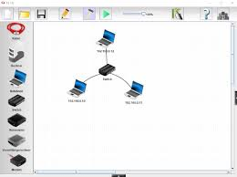
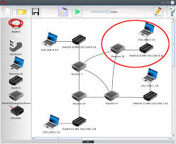
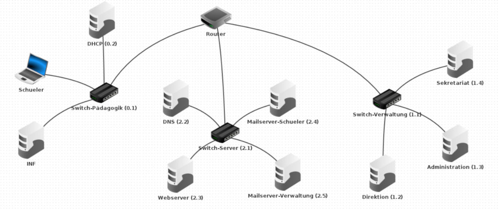
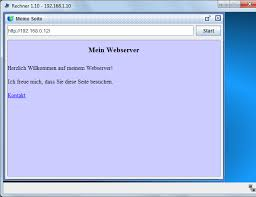
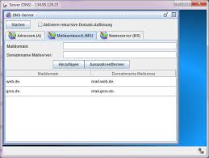

Aufgabe 1: Ein einfaches Netzwerk erstellen
Ziel: Erstellen Sie ein Netzwerk mit zwei Computern, die über einen Switch verbunden sind.
Schritte:
- Öffnen Sie Filius und ziehen Sie zwei Computer und einen Switch in die Arbeitsfläche.
- Verbinden Sie die Computer mit dem Switch, indem Sie das Kabelwerkzeug verwenden.
- Weisen Sie den Computern IP-Adressen zu (z. B.
192.168.1.1und192.168.1.2). - Testen Sie die Verbindung, indem Sie von einem Computer aus einen Ping-Befehl an den anderen senden.
Warum? Diese Aufgabe hilft Ihnen, die Grundlagen des Netzwerkaufbaus und der IP-Adressierung zu verstehen.
Aufgabe 2: Ein Router hinzufügen
Ziel: Erweitern Sie das Netzwerk aus Aufgabe 1, indem Sie einen Router hinzufügen.
Schritte:
- Fügen Sie einen Router zur Arbeitsfläche hinzu.
- Verbinden Sie den Switch mit dem Router.
- Weisen Sie dem Router eine IP-Adresse zu (z. B.
192.168.1.254). - Konfigurieren Sie die Standard-Gateway-Adresse der Computer auf die IP-Adresse des Routers.
- Testen Sie die Verbindung, indem Sie von einem Computer aus einen Ping-Befehl an den Router senden.
Warum? Diese Aufgabe zeigt, wie Router verwendet werden, um Netzwerke zu verbinden und Datenverkehr zu leiten.
Aufgabe 3: Ein Netzwerk mit mehreren Subnetzen
Ziel: Erstellen Sie ein Netzwerk mit zwei Subnetzen, die durch einen Router verbunden sind.
Schritte:
- Erstellen Sie zwei Subnetze, jedes mit einem eigenen Switch und zwei Computern.
- Verbinden Sie die beiden Switches mit einem Router.
- Weisen Sie jedem Subnetz eine eigene IP-Adressreihe zu (z. B.
192.168.1.0/24und192.168.2.0/24). - Konfigurieren Sie die Router-Schnittstellen mit den entsprechenden IP-Adressen für jedes Subnetz.
- Testen Sie die Verbindung zwischen Computern in verschiedenen Subnetzen.
Warum? Diese Aufgabe hilft Ihnen, Subnetting und Routing zwischen Netzwerken zu verstehen.
Aufgabe 4: Ein Webserver einrichten
Ziel: Fügen Sie einen Webserver hinzu und konfigurieren Sie ihn, um eine Webseite zu hosten.
Schritte:
- Fügen Sie einen Webserver zur Arbeitsfläche hinzu und verbinden Sie ihn mit einem Switch.
- Weisen Sie dem Webserver eine IP-Adresse zu (z. B.
192.168.1.100). - Konfigurieren Sie den Webserver, um eine einfache HTML-Seite zu hosten.
- Greifen Sie von einem Computer im Netzwerk mit einem Browser auf die Webseite zu (z. B.
http://192.168.1.100).
Warum? Diese Aufgabe zeigt, wie Webserver in Netzwerken verwendet werden, um Inhalte bereitzustellen.
Aufgabe 5: Ein E-Mail-Server einrichten
Ziel: Fügen Sie einen E-Mail-Server hinzu und konfigurieren Sie ihn, um E-Mails zu senden und zu empfangen.
Schritte:
- Fügen Sie einen E-Mail-Server zur Arbeitsfläche hinzu und verbinden Sie ihn mit einem Switch.
- Weisen Sie dem E-Mail-Server eine IP-Adresse zu (z. B.
192.168.1.101). - Konfigurieren Sie den E-Mail-Server mit einem Domainnamen (z. B.
mail.local). - Erstellen Sie Benutzerkonten auf dem E-Mail-Server.
- Testen Sie den E-Mail-Server, indem Sie von einem Computer im Netzwerk eine E-Mail an einen anderen Benutzer senden.
Warum? Diese Aufgabe zeigt, wie E-Mail-Server in Netzwerken verwendet werden, um Nachrichten zu senden und zu empfangen.
Testet Euer Wissen Und schaut ob ihr bereit seit für die Arbeit! (hehe)
Nachdem Ihr die Aufgaben abgeschlossen habt, könnt Ihr euer Wissen mit einem kurzen Quiz testen.